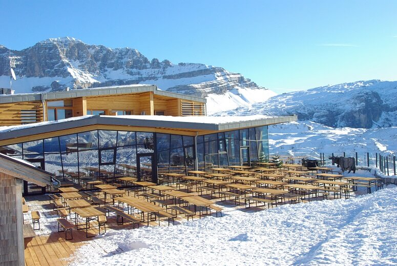
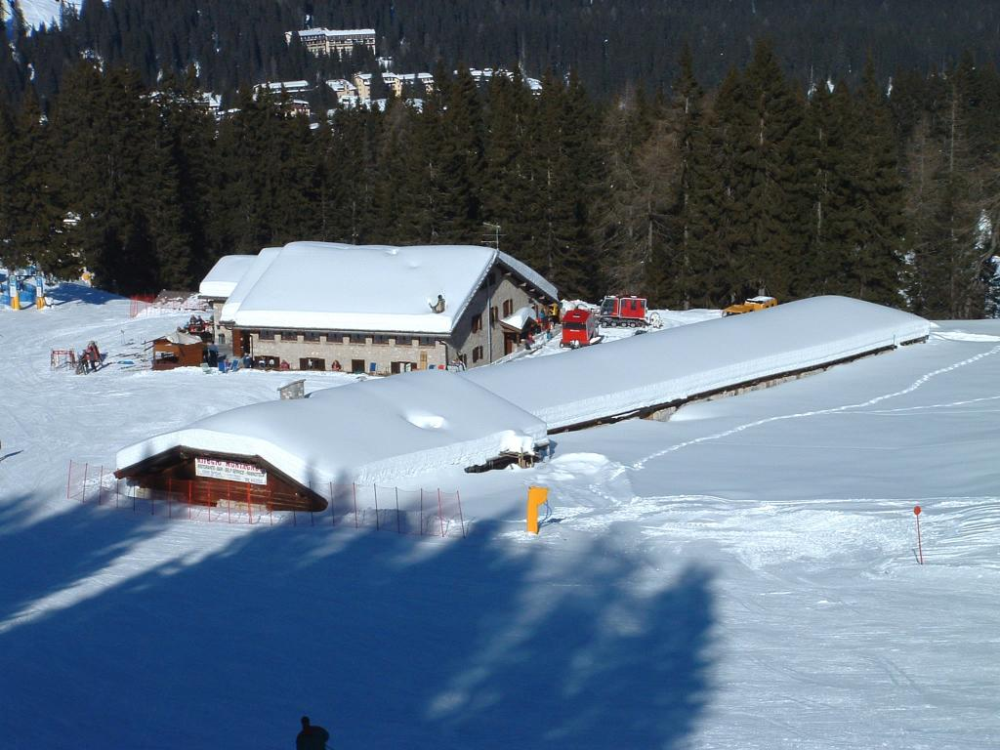
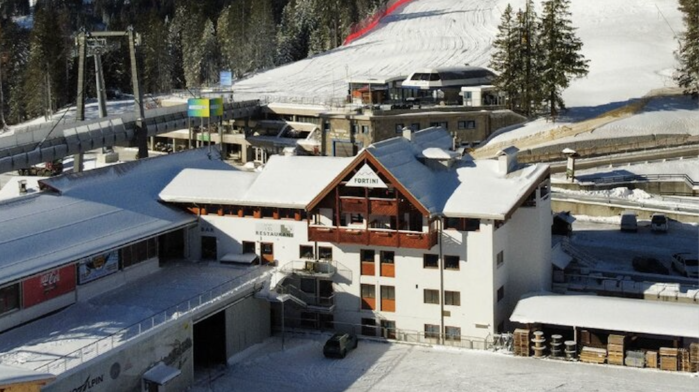

Where to stop and eat
The Spinale area offers elegant chalets and panoramic mountain huts, perfect for a break between ski runs.

Chalet Spinale
One of the most elegant dining spots in the ski area, ideal for a stylish lunch with mountain views.

Malga Montagnoli
A classic alpine stop, appreciated for its warm atmosphere and convenient location on the slopes.

Al Forte
A practical stop for coffee, snacks and short breaks before heading back onto the slopes.